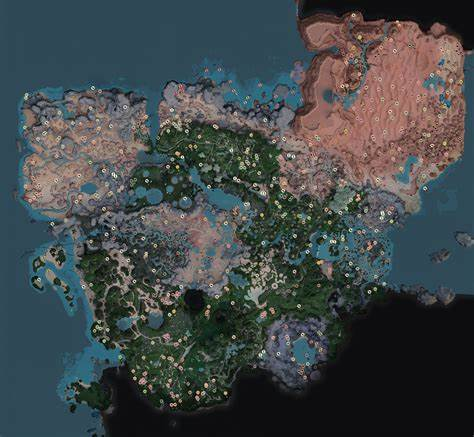

About Satisfactory
Satisfactory is a open world game mady by Coffee Stain Studios. The first stable version was released on March 19th 2019 but it is in developement since 2016. It is still
in Early Access and it is unknkown when the Early Access process is finished, because the developers have a lot of nice ideas they want to
implement in the game. The following pictures can give you a little preview of the game.
Preview
Story Line
Satisfactory generaly does not have a real story line yet, but there are speculations in the web that there are is a real chance for a story.
How already said, it has just generaly no stroy, but what we know that we are an employee of the FICSIT Inc..
You landed on the planet to build factories to send the produces resources with the space elevator to the earth. More is not known yet, but maybe it will be possible
to leave the planet and enter space.
Map
How already mentioned, Satisfactory has a open world map, but the special part of the map is that it is completely handdrawn.
All resource nodes have a fixed position and you can search for the specific positions of each resource with the interactive map on
Satisfactory Calculator.
